Throwaway concept mockups for the landing / logo refresh — not wired into the app, reference only. Click any tile for the full set (mark · lockup · app icon · favicon 32/20/16 · mono · on-light). Several marks animate — open them to see the motion.
A bolder pass: more energy, motion, and craft. Led by your favorite — the negative-space P — pushed three ways, plus one mark per "not boring" flavor (move · generative · clever · vivid).
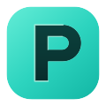
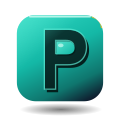
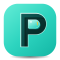
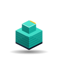
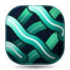
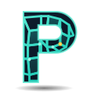
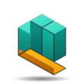
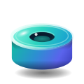
The first, calmer pass (you felt these were a touch boring). Kept for reference — the negative-space tile is the one you flagged.
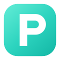
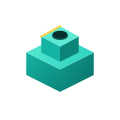
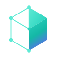
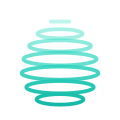
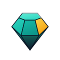
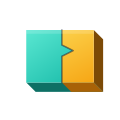
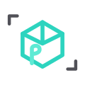